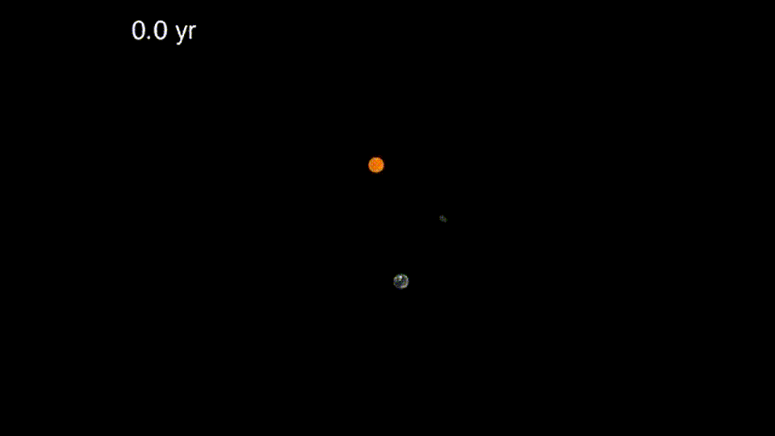
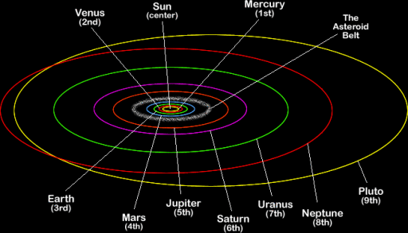
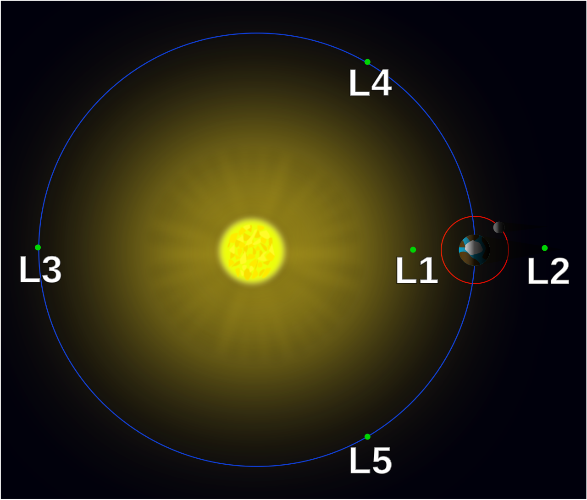
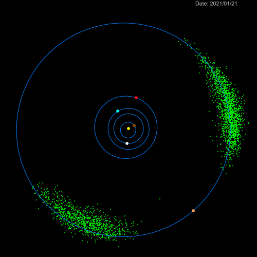
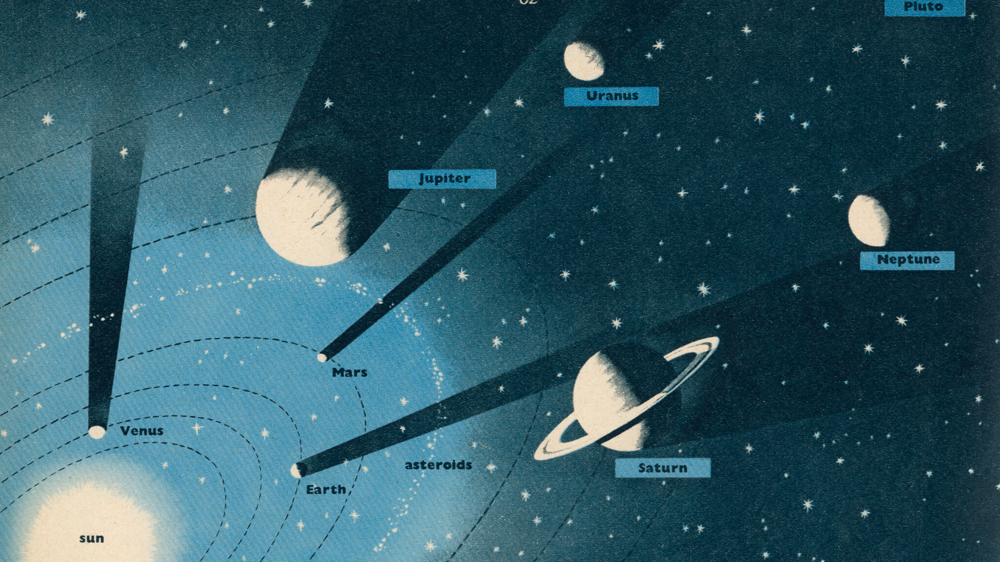

This is not required schoolwork. This is just something interesting for your mind to chew on.
Note: Some of these links contain mathematics. This is not something you should invest time learning yet, this is only to pique your interest.
Interesting Orbits
Look at this bizarre object orbiting near the earth. Why is it doing that? It seems nonsensical, ridiculous, impossible. And yet it exists, even now this asteroid is doing its dance out there in space. How can we explain this?

The music of the spheres
Since ancient times, the movement of the planets captured the imagination of starry eyed dreamers the world over. Once we learned that the Earth orbits the Sun instead of the other way around, we got a deeper understanding of our place in the universe.
Originally, astronomy was mixed up with philosophy. And it makes sense, the world in the sky is so much larger than all of us, bearing down on us from above. A cosmic realm full of mystery. It never even occurred to people that physics might be involved. The petty forces that push shot pellets around a laboratory also push planets through the heavens? Inconceivable.
Therefore, at first the orbits of the planets were thought to be circles, a perfect cosmic symmetry. Early scientist Tycho Brahe and his student Johannes Kepler gathered extremely rigorous data on the exact movements of the planets through the sky. Using this, Kepler constructed a rough model of planetary motion: Kepler's three laws. At the same time, Galileo Galilei was inventing more accurate telescopes, and engineering new innovative pendulums and thermoscopes to aid his quest for knowledge. These men were all mathematicians. They found symmetry in equations, instead of geometry.
These forays into astronomy are regarded by many to be the birth of science as we know it. The rigorous data collection, the process of reasoning, using mathematics to define physical laws, engineering new innovative tools....it's all there. This same scientific process has opened doors for us in medicine, biology, chemistry, economics, industrial engineering....etc. In a way, you can say the heavens inspired us and showed us the way.
The Planets
Pluto's eccentric orbit stands out from the rest. It actually passes inside the orbit of Neptune. It's also skewed in the vertical direction, 17 degrees off the Ecliptic plane (the Sun's equator, the flat plane where all the planets, including the earth, orbit). This strange orbit is just one of the reasons why Pluto's planet status is put to question.
|  |
Although the orbits of the planets look like circles, they are all slightly elliptical. An ellipse is a stretched circle. You can draw one yourself using a piece of string and some tacks:

Technically, the ellipse has two "centers" -- those two places where the tacks are stuck in the paper. These are called the foci. According to Kepler's model, for any elliptical orbit the Sun resides at one focus.
https://www.youtube.com/watch?v=qDHnWptz5Jo
The Sun is by far the most massive object in the solar system, we are all captured in its mighty grip[1]. The asteroid belt is a great divider. Inside, the planets are all small and rocky, these are called the four inner planets: Mercury, Venus, Earth, and Mars. Outside, the planets are all extremely large, and made overwhelmingly of gas. These are the outer planets: Jupiter, Saturn, Uranus, and Neptune. But is Pluto a planet[2]? These planets are all named after the Roman gods of antiquity.
The Sun's gravity dominates the solar system, but all of the planets pull on each other as well. This causes slight deviations in orbits over time. In fact, figuring out the math behind these interactions is one of the great unsolved problems of physics. As of right now, we cannot exactly predict the orbit of more than 2 objects. This is called "the three body problem", perhaps one day you will be the one to solve it.
Kepler's Model
The speed that a planet orbits the Sun depends on how far away it is. Objects which are further away are pulled more weakly into the Sun, so they orbit much more slowly. There is a strict mathematical relationship here.
Notice the slight eccentricity of the orbits, particularly that of Mercury. Also notice how planets further away travel more slowly. And this isn't simply because they have further to travel, they actually have a slower orbital speed.
 |
The bigger a planet is, the stronger its gravitational influence. As you get closer to the planet the gravitational pull becomes stronger. Jupiter has the strongest gravity of all the planets, but it's still nothing compared to the Sun. Many of the planets have captured moons which orbit them. The Earth has one which we all enjoy seeing in the sky at night, but the gas giants have dozens of them[3].
Lagrange Points
Named after the famed French mathematician Joseph Louis Lagrange, these are stable points between two orbiting bodies in space. Points where the gravitational pull between the two balances out just perfectly. If you were floating at one of these points, you would be in perfect harmony, orbiting the Sun right along with the earth.
For an animation of what this looks like: https://en.wikipedia.org/wiki/Lagrangian_point#/media/File:Lagrangianpointsanimated.gif
There are 5 Lagrange points, labelled L1 through L5. Their position is determined mathematically. These points only consider the gravity of the Sun and the Earth. Other planetary bodies, such as the Moon, Mars, Venus, Jupiter....etc. play havoc with them, although their influence is very minor and can be ignored for the most part.
|  |
Understanding the Lagrange points requires some careful thought.
Note: in this case a "lower orbit" means that the object is closer to the Sun, and wants to move faster. A "higher orbit" means that the object is further from the Sun, and wants to move slower.
L1: This point is the least mysterious of the lot. It is between the Earth and the Sun, at the place where the gravitational pull between the two matches exactly. An object placed here would not fall into the earth, nor would it fall into the Sun. It would simply hang in space, perfectly balanced in between.
L2: If you notice, this point is in a higher orbit. This means that it should be orbiting the Sun more slowly than the Earth is; it should not be able to keep pace with the Earth. However, the Earth's gravity is adding to the pull of the Sun, which pulls it into the center more strongly. This means that L2 orbits the center faster than it otherwise would, keeping perfect pace with the Earth.
L3: Just like L2, the pull of the Sun and the Earth are in alignment. Therefore an object placed at this point is pulled into the center more strongly. Because the Earth is so far away, its influence is not very great. Therefore this point is in almost exactly the same orbit as the Earth (only slightly higher, because of the extra pull from the Earth)
L4: If an object is placed between this point and the earth, it will start to be pulled back into the earth. That will cause the object to lose orbital speed and begin falling into the Sun. When this happens, it drops into a lower orbit, and speeds up, flinging itself ahead beyond the L4 point. It is carried into a higher orbit again by its excess speed, and slows down, once again falling back towards the earth to repeat the cycle over again. In this manner, the object is orbiting L4.
L5: Very similar to L4, except this time the point is lagging behind the Earth. If an object is placed between L5 and the Earth, it will start to fall into the Earth. This increases its orbital speed, and pushes it away from the Sun into a higher orbit. Once there, it loses orbital speed and falls back behind L5. The lost momentum, combined with the pull of the Earth, drag it into a lower orbit. It speeds up again and is carried past L5 towards the Earth, where it repeats the cycle over again. In this manner, the object is orbiting L5.
L1, L2, and L3 are easier to understand, it's much harder to understand L4 and L5. Nobody knew that these points existed until they saw it in the math. This is the power of mathematics in science.
L1, L2, and L3 are unstable equlibriums. L4 and L5 are stable.
 |
L1, L2, and L3 are considered "unstable". This means that an object placed at any of these points is balanced very precariously, like trying to balance a basketball on your finger. Any small deviation of the object's positon will tip it out of place, just as any small deviation of the basketball on your finger will cause it to fall to the ground[4].
The orbits around L4 and L5 are considered "stable". This means that small deviations do not break the orbit. Objects can hang around these points for a long time. Asteroids often clutter here, these are called "Trojan asteroids". Jupiter has millions of Trojan asteroids.
Jupter's trojan asteroids clutter around the L4 and L5 points. Jupiter has such a powerful gravity that it has captured lots of Trojans. The Earth by comparison only has 1 known trojan.
|  |
Now we have finally uncovered the mystery behind that asteroid's strange orbit in the beginning. It is Earth's trojan asteroid, orbiting around the L4 Lagrange point. There is a vertical element to this asteroid's orbit. That is because both the Sun and the Earth are working to pull the asteroid back into the ecliptic plane whenever it leaves, so it oscillates up and down.
How are asteroids captured at the Lagrange points? Nobody really knows for sure. It just goes to show how complex orbits can be. So complicated that we need supercomputers to model them. One day perhaps we will learn these answers, the heavens still have a lot to teach us.

[1] It is hypothesized that when the Sun was formed, there was a spinning disk of hot material surrounding it. Just as heavier liquids will sink below lighter ones in a flask, the heaviest elements concentrated themselves closer to the Sun. Over time, the material from this disk accreted into planets. Thus, the planets closer to the Sun have heavier materials than the planets further away. Mercury has denser rocks than Earth. Jupiter has heavier gasses than Neptune.
[2] Pluto is large enough to have its own moon, Charon. But scientists have discovered many more orbiting icy bodies similar to Pluto. It is thought to simply be a stray object from the Kupier Belt, one of many. The Kuiper Belt is another asteroid belt which surrounds the outer reaches of the solar system, at the border between our solar system and interstellar space.
[3] The interaction between a planet and its moon (or moons) has many profound consenquences, such as tides. Moons can slowly change a planet's rotation, cause geological activity, and even serve a protecting role in deflecting meteors.
[4] Despite the instability of these points, NASA scientists have placed satellites at both L1 and L2. These satellites use a special halo orbit to remain fixed in place.

{kind=link}